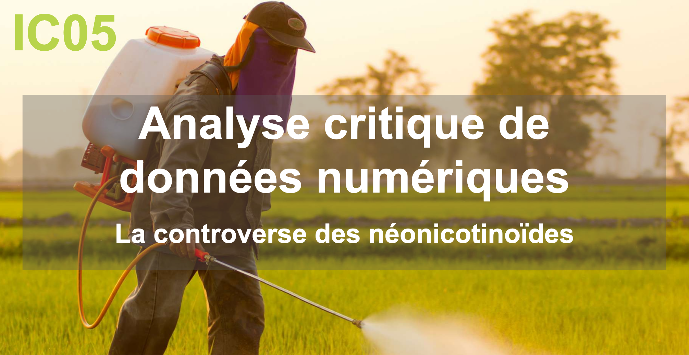

Projet IC05
Etude d'une controverse : les néonicotinoïdes

Ce projet, réalisé dans le cadre de l'UV IC05, fait suite à un mémoire de SI90 dédié à la place de la société civile dans l'arbitrage écologique inhérent aux pesticides en France.
L'objectif est ici de préciser cette première approche synoptique sur la réintroduction récente des néonicotinoïdes comme produits phytosanitaires autorisés en agriculture dans le pays.
En nous appuyant sur des aspirations de données, puis le croisement de leurs visualisations, et le recours à un cadrage historique, nous tenterons d'illustrer la controverse et sa manifestation sur différents lieux d'expression en ligne.
Membres :
Yoann AYOUB
Jordan BURNICHON
Pierre LA ROCCA
Fasélys LE HELLEYE
Lilou UGON
Professeure : Anne Bellon
UV : IC05
Semestre : P21